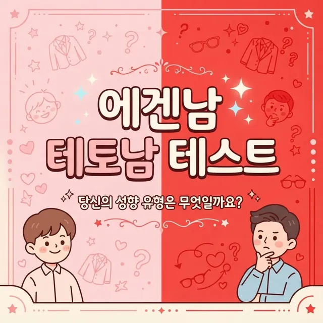

← 전체 테스트 보기
에겐남 테토남 테스트
나는 에겐? 테토? 8문항 성향 점검 (재미용)
1 / 8
결과를 모으고 있습니다...
당신의 결과는
나는 에겐? 테토? 8문항 성향 점검 (재미용)

결과를 모으고 있습니다...
당신의 결과는
에겐남 테토남 테스트는 요즘 유행하는 에겐(부드럽고 감성적인 스타일)과 테토(강하고 추진력 있는 스타일) 구분을 8가지 캐릭터로 재미있게 풀어보는 심리 퀴즈입니다. 순수 새싹 에겐형, 댕댕미 에겐형, 여우 에겐형, 츤데레 에겐형부터 직진 테토형, 야생 테토형, 카리스마 테토형, 반전 테토형까지 하나가 결과로 나옵니다. 결과마다 최고의 궁합 한 줄과 에겐 지수·테토 지수 비율이 함께 표시되니, 친구와 비교하며 이야기꽃을 피우기 좋습니다. 실제 심리 검사가 아니라 유행어를 소재로 한 놀이이니 부담 없이 즐겨주세요.
순위를 가리는 시험이 아닙니다. 8개 질문의 각 보기가 특정 유형에 미리 정해진 가중치를 주며, 모든 문항의 점수를 합산해 가장 높은 유형이 결과로 표시됩니다. 가입 없이 약 2분이면 끝나고, 고른 답변과 결과는 브라우저 안에서만 계산되며 서버로 보내지거나 저장되지 않습니다.
순수 새싹 에겐형(🌱): 마음이 얼굴에 다 드러나는 순수형입니다. 좋아하면 좋아한다고 말하는 솔직함이 매력입니다.
댕댕미 에겐형(🐶): 사람을 좋아하고 표현에 거리낌이 없는 댕댕이형입니다. 함께 있으면 기분이 좋아지는 리액션 장인입니다.
여우 에겐형(🦊): 부드러운 얼굴로 밀당을 즐기는 여우형입니다. 관심 없는 척 다 챙기는 눈치의 달인입니다.
츤데레 에겐형(🧊): 말은 툴툴해도 행동은 따뜻한 츤데레형입니다. 알수록 빠져드는 겉차속따 타입입니다.
직진 테토형(🔥): 좋으면 좋다고 바로 말하는 직진형입니다. 연락도 고백도 망설이지 않는 추진력의 소유자입니다.
야생 테토형(🐺): 틀에 갇히기를 싫어하는 자유로운 영혼입니다. 예측 불가능한 매력이 사람을 끌어당깁니다.
카리스마 테토형(👑): 어디서든 자연스럽게 리더가 되는 카리스마형입니다. "나만 믿어"를 실제로 지키는 신뢰감의 상징입니다.
반전 테토형(🎭): 겉보기엔 강해 보여도 속은 여린 반전형입니다. 무심한 척 챙기는 갭 차이가 최대 매력입니다.
에겐·테토 이야기가 나오면 빠지지 않고 참여하는 분, 썸 상대의 스타일이 궁금한 분께 잘 맞습니다. 연인과 각자 해보고 궁합을 비교하는 활용법도 인기가 많으며, 모임에서 서로의 유형을 공개하면 어색한 분위기가 풀립니다.
아니요. 답변과 결과는 브라우저에서만 처리되며 서버로 전송되지 않습니다. 페이지를 벗어나면 사라지니, 간직하고 싶은 결과는 공유 버튼으로 저장해두세요.
무제한 무료입니다. 답변을 바꿔가며 다른 유형도 확인해보세요. 친구와 각자 해보고 결과를 비교하는 것도 재미있습니다.
결과 화면 하단의 '링크 복사하기' 또는 '공유하기' 버튼으로 공유할 수 있습니다. 친구에게 링크를 보내면 같은 테스트를 바로 해볼 수 있습니다.
8문항의 보기마다 에겐 4유형과 테토 4유형에 가중치가 나뉘어 있습니다. 양쪽 계열의 합산 점수 비율을 백분율로 보여주는 것으로, 심리 측정 수치가 아니라 재미용 비율입니다.
그렇다면 반전 테토형이나 츤데레 에겐형처럼 양쪽 매력을 가진 유형이 나올 가능성이 큽니다. 어느 한쪽으로 치우치지 않은 것도 하나의 개성이니 결과 그대로 즐겨주세요.
| 유형 | 특징 |
|---|---|
| 🌱 순수 새싹 에겐형 | 마음이 얼굴에 다 드러나는 순수형. |
| 🐶 댕댕미 에겐형 | 표현에 거리낌 없는 리액션 장인. |
| 🦊 여우 에겐형 | 부드럽게 밀당을 즐기는 눈치의 달인. |
| 🧊 츤데레 에겐형 | 말은 툴툴해도 행동은 따뜻한 타입. |
| 🔥 직진 테토형 | 좋으면 바로 말하는 추진력의 소유자. |
| 🐺 야생 테토형 | 틀에 갇히기 싫어하는 자유로운 영혼. |
| 👑 카리스마 테토형 | 자연스럽게 리더가 되는 신뢰감의 상징. |
| 🎭 반전 테토형 | 겉은 강해 보여도 속은 여린 갭 차이. |
연애 유형 테스트에서 데이트 스타일을, 플러팅 능력 테스트에서 매력 발산 방식을 확인해보세요. 친구 사이 역할이 궁금하다면 친구 관계 유형 테스트도 추천합니다. 배경이 궁금하면 에겐남 테토남, 어떻게 구분할까?도 함께 읽어보세요.
모든 결과는 재미와 오락을 위한 참고용 해석입니다.